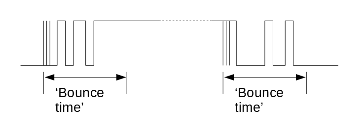

Handling GPIO-connected switches robustly in C on the Raspberry Pi
 Educational applications for the Raspberry Pi often involve connecting
switches or pushbuttons to the GPIO pins, and using the switch
state to trigger some action -- perhaps controlling some other
electrical device, or just performing some operation in software.
Educational applications for the Raspberry Pi often involve connecting
switches or pushbuttons to the GPIO pins, and using the switch
state to trigger some action -- perhaps controlling some other
electrical device, or just performing some operation in software.
The 'sysfs' interface in the Linux kernal -- despite its
deprecated status -- makes this kind of thing very easy, at least
in principle. It's just a matter of reading the GPIO pin
status from a pseudo-file in the /sys/class/gpio/
directory. This will either return "1" for a high logic level,
or "0" for a low one.
In an educational setting, having a program loop endlessly, checking the state of the GPIO, and then doing something when it changes, might well be satisfactory. In a practical application, this won't work very well, for various reasons.
First, unless the program checks the status very frequently -- which involves a lot of CPU activity -- it won't be very responsive to button presses. Second, it doesn't cope very well with the scourge of switch contact bounce. Again, this might not matter in all applications -- it might not hurt to switch something on that is already on, for example. But if you're using push-buttons to operate a menu selection, for example, it's very unhelpful if every press of the button moves the menu selection by three of four steps. For counting applications, this lack of determinacy could be a critical failure.
What we need is a strategy that (a) uses little or no CPU for the routine processes of checking the GPIO pin status, (b) responds instantly (well, within milliseconds), and (c) makes some effort to avoid the effects of contact bounce.
This article describes an approach for handling these issues in a C application, working around some odd quirks in the way that the Raspberry Pi kernel handles GPIO interrupts. I don't suppose that this is the only way to solve the problem, and I can't be certain that future Raspberry Pi models, or even newer kernels, would behave in exactly the same way.
Polling for interrupts
The least CPU-intensive way to determine when a GPIO pin
has changed status is to use the poll()
operation to check for 'priority' events. The way this
should work for the sysfs interface is
described in the
kernel documentation.
We need to open the value pseudo-file for each
pin, and the call poll() on the array of
file descriptors.
In outline, the code looks something like this:
struct pollfd fdset [MAX_PINS];
int gpio_fd_1 = open ("/sys/class/gpio/gpio22/value", O_RDONLY|O_NONBLOCK);
fdset[0].fd = gpio_fd_1;
fdset[0].events = POLLPRI;
int gpio_fd_2 = open ("/sys/class/gpio/gpio27/value", O_RDONLY|O_NONBLOCK);
fdset[1].fd = gpio_fd_2;
fdset[1].events = POLLPRI;
...
poll (fdset, MAX_PINS, -1);
The code creates an array of pollfd objects, and then
sets each one to be triggered by a priority POLLPRI
event. The poll() call returns whenever such
an event is detected.
A priority event could be a low-to-high level change, or a high-to-low
level change, or both, according to the value written to the
edge pseudo-file for the relevant GPIO pin. In practice,
though, a switch contact will generate both high-low and low-high
transitions, whether it opens or closes, so we can't assume that
contact bounce won't generate multiple events, even if the
specific edge value is set.
Note that the poll operation can monitor any number
of pins in the same call, and it does not seem to make any
difference to the CPU usage -- it's effectively zero whilst
waiting for a transition, however many pins are monitored.
Of course, if you monitor multiple pins, you need a way to work
out which pin triggered poll() to exit.
for (i = 0; i < MAX_PINS; i++)
{
if (fdset[i].revents & POLLPRI)
{
// Pin definition i was triggered
}
}
If we are looking for level changes in both directions (switch on
and switch off), the polling code does not give any indication of
which direction the level changed. To figure this out we need to read
the file descriptor for the value pseudo-file again.
Unfortunately, this file won't contain valid data at this point.
According to the kernel documentation:
"After poll(2) returns, either lseek(2) to the beginning of the sysfs file and read the new value or close the file and re-open it to read the value."
In fact, neither of these approaches seems to work very well on the Pi, if there are very rapid level transitions -- which there will be if the switch contacts bounce.
What I've found to work reasonably well is the following:
1. Read the file descriptor to exhaustion (probably only two bytes)
to clear the interrupt status
2. Wait a short time (see below)
3. Open the value file again, and get a new file descriptor
4. Read two bytes -- the first byte will be the desired "1" or "0"
5. Close the new file descriptor
The length of a 'short time' needs a little explanation. We aren't waiting for any change in the contact status here -- we're just waiting for the value stored by the kernel to settle. In my tests, a delay of a millisecond or so is sufficient. I have to admit that I've arrived at this procedure by trial-and-error, because the documented method does not seem to work reliably. I can't be certain that it will work in all Pi versions and set-ups, although I've been using it myself for about five years, and it's held up so far.
Characterstics of contact bounce
So we have a way to detect pin level changes without putting any strain on the CPU. But that, in itself, doesn't provide a way to handle contact bounce.
It isn't obvious to most designers, but switch contacts rarely make or break cleanly. The GPIO input level detection trips at a particular voltage but, if the voltage is changing slowly -- and 'slowly' here means over the course of a few milliseconds -- mutliple level changes can be registered over a short period. In addition, switch contacts frequently do literally bounce; that is, the contact surfaces bounce off one another before they settle into position. Typically a plot of pin state over time looks something like this:

In this plot, the 'bounce time' is the time over which we have to assume that level changes are not genuine, and must be ignored. The chaotic nature of switch contact behaviour, combined with the behaviour of the GPIO input circuit, means that we can't really predict how long the bounce time is -- all we can do is to set a value and hope, or insist, that the switch is not operated more frequently than that limit allows.
Handling contact bounce
So far as I know, the only robust way to handle contact bounce in a C application (or any other language routinely used on the Raspberry Pi) is to lock out transition detection for the bounce time, after the first level transition is detected. That's easy enough if we're only monitoring one pin -- we can just have the program sleep for a couple hundred milliseconds, or whatever turns out to be appropriate, then flush any outstanding interrupt events. However, if we are monitoring multiple pins, although we might want to lock out the same pin from triggering rapidly, we probably want other pins to trigger within the bounce times of their neighbours.
One way to handle this is to maintain an array of time values for each pin, recording when the first transition was detected for each pin. Subsequent transition for the same pin are ignored until the current time exceeds the stored time by the selected bounce time.
The complication here is that most programming languages and
libraries do not provide a way to determine the time elapsed
since a fixed point in time (e.g., the program start). This
is actually surprisingly difficult to do, unless you have
specialist hardware. We can use the general system clock
to determine the elapsed time by calling, for
gettimeofday() but this is problematic.
Why should this be? The problem is that that Linux system clock is prone to be disturbed. In a system like the Pi, which has no built-in real-time clock, it's particularly problematic. That's because we usually have to synchronize the clock from a time server using, e.g., NTP -- or just accept that the date is sometime around January 1970 all the time.
What typically happens when a Pi boots is that the system clock starts in January 1970 and then, when an Internet connection is established, suddenly jumps forward forty or so years. Looking for timing differences in switch contact changes of the order of milliseconds, when your timing baseline can suddenly shift by forty years, is a little tricky.
If you can't delay your program start-up until the system time has settled -- and in embedded applications you probably can't -- then one approach to a solution is just to reset the program's timing baseline when two events seem to be further apart in time than it reasonably plausible -- a year, perhaps. This does seem to work for me, but it's a method that might have to be adapted to suit the needs of the application.
Example
Complete sample code that demonstrates the techniques described in this article can be found in my pi-button-pipe application on GitHub.
Conclusion
It's surprisingly difficult to handle GPIO-connected switches in a robust, production-ready way on the Raspberry Pi. Partly that's because it's a genuinely difficult problem, and partly because the Pi kernel is a little quirky in this area. If practicable, hardware switch debouncing, or a combination of hardware and software, might be more appropriate for critical applications.